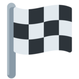
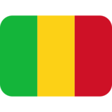
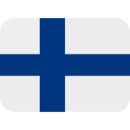
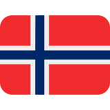
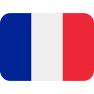

Solution: Faded Away
Answer: NO TIME OR SEASON
Written by quatrevingtneuf
In this puzzle, solvers are presented with a series of gradients, from some colour on the left, to black or white on the right. We can start by looking at the feeder answers for this metapuzzle; each of these answers can be tied to a specific country, which is corroborated by the flavourtext ("all over the world").
| Answer | Characteristic | Country |
|---|---|---|
| BRABANCONNE | National anthem | Belgium |
| FUJI | Tallest mountain | Japan |
| MACRON | Current president | France |
| PO | Longest river | Italy |
| SOCOTRA | Largest island | Yemen |
| REPLOT BRIDGE | Longest bridge | Finland |
| ZLOTY | Current currency | Poland |
Considering the gradients, solvers may eventually discover that each country associated with an answer can be paired with another country's flag such that "fading" a colour to white or black transforms the latter into the former. The blanks are listed in alphabetical order by re-coloured flag country, to aid with identification.
| "Faded" Country |  | Answer | "Original" Country | Blanks | |
|---|---|---|---|---|---|
| Japan | Fuji | Bangladesh |  |
Tazing Dong | |
| Belgium | Brabanconne | Chad | Tchadienne | ||
| Poland | Zloty | Chile | Peso | ||
| Yemen | Socotra | Hungary | Szigetkoz | ||
| Italy | Po | Mali |  | Niger | |
| Finland |  | Replot Bridge | Norway |  | Drammen Bridge |
| France |  | Macron | Romania | Iohannis |
After taking the numbered letters in order, we get our final answer: NO TIME OR SEASON.
Author’s Notes
This metapuzzle was written in late February 2022, early in the development of this puzzlehunt. At that time, we hadn't thought about a release date for this hunt yet. In constructing this metapuzzle, we inadvertently gave ourselves a soft deadline: MACRON was up for re-election in April 2022, and if not re-elected, would be leaving office in early May 2022. Fortunately for us, after the first runoff, it was down to either Macron or Le Pen, and both answers were easy to fit into that particular feeder puzzle. Melenchon would have been considerably trickier to accommodate.
Our woes didn't end there. There is a surprising lack of consensus online regarding the tallest peak in Bangladesh (to be honest, finding the tallest peak in such a flat country is already of some amusement to this author). We ultimately opted for the peak cited as being the tallest on Wikipedia, despite not being able to track down quality sources to verify that claim. The largest island in Hungary is not nearly as contentious, but this information is not straightforward to find. We ended up editing Wikipedia for this to hopefully reduce solver frustration.